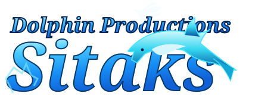

Identiteit met een verhaal
De juiste uitstraling, in iedere toepassing.

Een eigenzinnige creatieve wereld voor vormgeving, identiteit, illustraties en grafische realisaties.
Van visuele identiteit tot campagnes, digitale visuals en presentaties. Dit onderdeel mag speelser en expressiever zijn dan de zakelijke SITAKS-pagina.
De juiste uitstraling, in iedere toepassing.
Voor schermen, websites en social media.
Een visueel concept dat tot leven komt.
De definitieve galerij met echte SITAKS-ontwerpen wordt gevuld met jouw aangeleverde afbeeldingen.